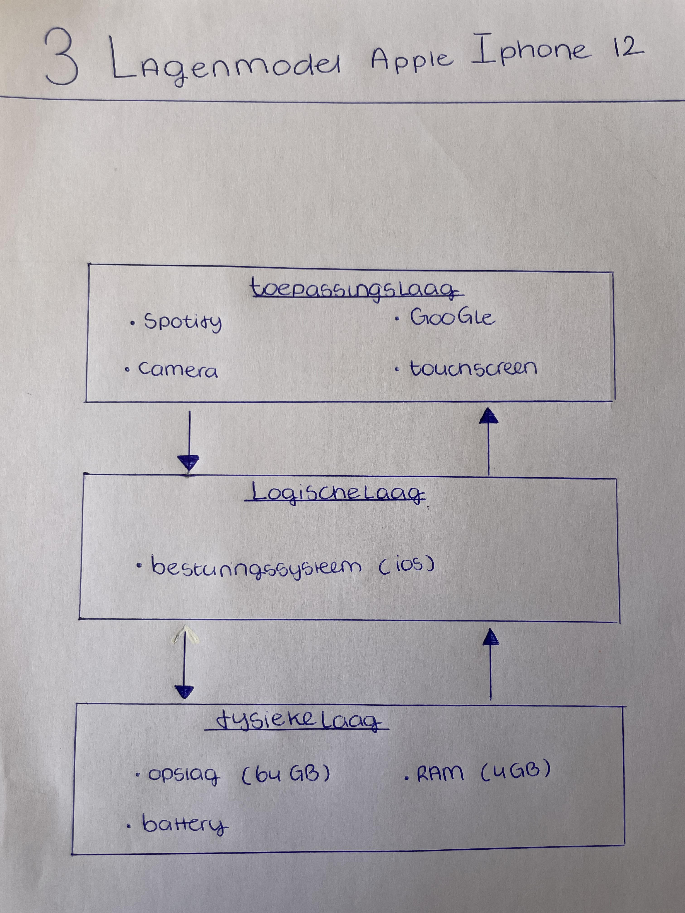

Wat is het drielagenmodel?
het drielagenmodel van een telefoon verwijst meestal naar de manier waarop de hardware
en software van een smartphone zijn opgebouwd. Dit model bestaat uit drie hoofdlagen:
- Fysiekelaag: Dit is het fysieke deel van de telefoon, zoals de processor, het geheugen,
het scherm en de batterij. Deze laag bevat alle hardwareonderdelen die nodig
zijn voor de werking van de telefoon. Zonder deze laag zou je telefoon niet werken
- Logischelaag: Dit is de softwarelaag die direct boven de hardware zit9.
Hierop draait het besturingssysteem van de telefoon, zoals Android, iOS (voor iPhones)
of een ander mobiel besturingssysteem. Het besturingssysteem beheert de hardwarebronnen,
biedt een gebruikersinterface en ondersteunt de uitvoering van apps.
- Toepassingslaag: Dit is de bovenste laag van het drielagenmodel. Hierop draaien
de applicaties (apps) die je op je telefoon installeert. Deze apps kunnen variëren van
sociale media-apps en games tot productiviteitstools en meer. Ze maken gebruik van de functies
en mogelijkheden van de hardware en het besturingssysteem om verschillende taken uit te voeren.
Dit drielagenmodel helpt bij het begrijpen van de inhoud van je smartphone. Door het drielagenmodel
snap je beter hoe je telefoon of computer werkt en hoe het in elkaar zit.
Dus; zonder drielagenmodel heb je geen functionerend apparaat.
Hier ziet u een foto van het drielagenmodel dat bij mijn telefoon hoort.
